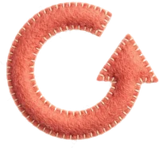
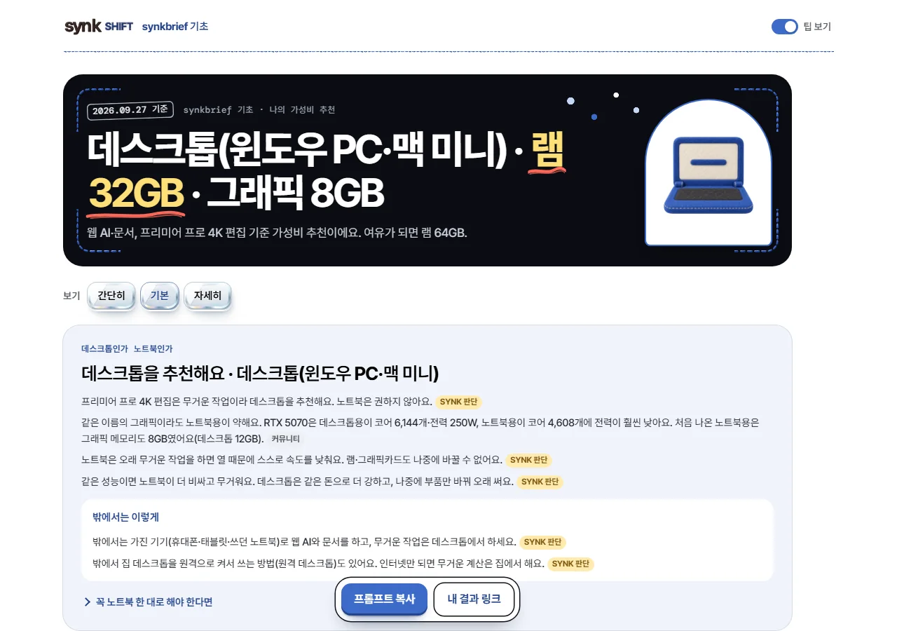
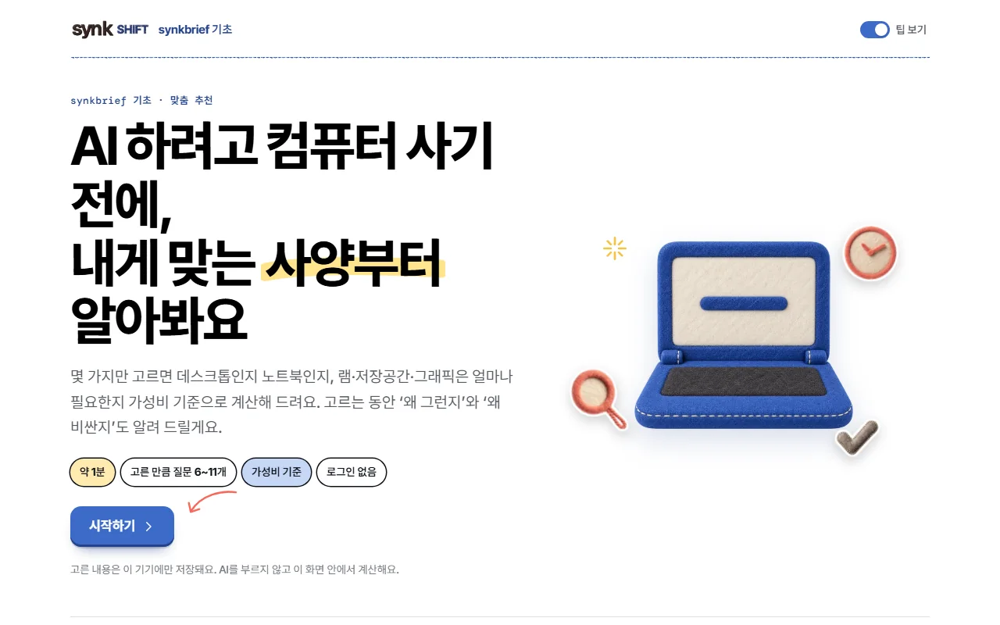
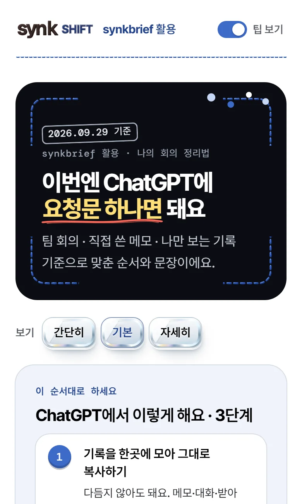
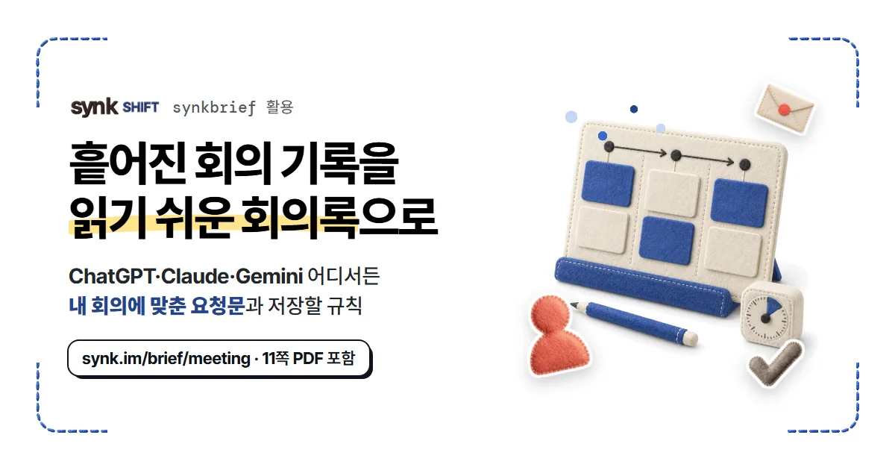
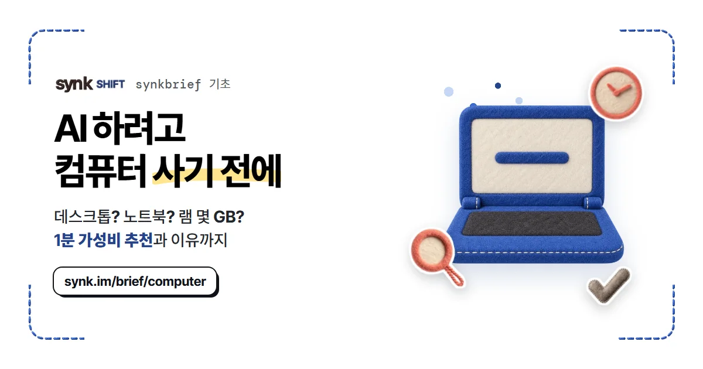

늘 쓰는 셋
 스케치북 콜라주대표 펠트 그림 하나에 스티커 두세 장, 종이테이프 한 조각. 스티커만 살짝 기울여요.
스케치북 콜라주대표 펠트 그림 하나에 스티커 두세 장, 종이테이프 한 조각. 스티커만 살짝 기울여요.
가벼운 엠보싱주 버튼은 펠트 두께로 눌리고, 핵심 숫자 하나만 도드라져요. 나이브 드로잉제목의 핵심 한 구절에 손그림 형광펜이나 밑줄. 화살표와 반짝이는 한 개씩.
나이브 드로잉제목의 핵심 한 구절에 손그림 형광펜이나 밑줄. 화살표와 반짝이는 한 개씩.
SYNK 디자인 양식
펠트 스크랩북 · 2026.09.29 확정
원칙
손으로 만든 느낌 세 가지는 어디에나 써요. 요즘 유행하는 표현 네 가지는 한 페이지에 한 번씩만 써서, 본문은 흰 종이 위에서 편하게 읽히게 둬요.
늘 쓰는 셋

흰 바탕에 검정 글자가 기본이에요. 구분선은 실제 실땀 사진, 고르는 버튼은 승인된 유리 카드예요. 크림·베이지 바탕과 CSS 점선은 쓰지 않아요.
가장 중요한 복사 상자 하나
결과를 공개하는 머리 한 번
대표 그림 하나만 아치 창에
좋은 결과에만, 멈춘 점 몇 개
색
바탕은 두 색뿐이에요. 색은 실땀·스티커·강조 면에만 쓰고, 한 화면의 강조색은 사업 고유색 하나로 정해요. synkbrief(SHIFT)는 청금석이에요.
#FFFFFF모든 바탕#000000본문 글자#10131A윤곽선·단단한 그림자·알림#0B0D12카메라 화면 한 곳#FFE07A, 손그림 밑줄과 화살표는 코랄이에요.글자
synkbrief 활용 · 회의 정리
흩어진 회의 기록을 회의록으로
본문은 17px, 줄 간격 1.62로 둬요. 한 줄은 한글 서른다섯 자 안쪽이 편해요. 단어가 중간에 끊기지 않게 줄을 바꿔요.
부품
모든 부품은 scrapbook.css의 sb- 이름으로 쓸 수 있어요. 맞춤 도구가 먼저 쓰던 hl·ul·stk·mono도 같은 부품이에요.
제목 하나에 한 곳만. sb-mark · sb-underline · sb-arrow · sb-spark
램 16GB면 충분해요
요청문 하나로 끝
승인된 펠트 아이콘만 스티커로 써요. 흰 칼선과 붙인 그림자가 들어가요. sb-sticker · sb-taped
알아 두면 좋은 팁 테이프는 팁 상자처럼 한 번 더 볼 곳에 붙여요.
구획 사이, 머리줄 아래, 팁 상자 둘레에 실제 실 사진을 써요. sb-stitch · sb-stitch-box · sb-corners
카드는 옅은 선이 기본이에요. 핵심 카드 하나만 검은 윤곽과 색 그림자, 도드라진 숫자를 가져요. sb-card · sb-card key · sb-emboss · sb-bento
램
16GB
웹 AI와 편집을 같이 켜도 여유 있어요.
저장공간
SSD 512GB
영상 원본은 외장에.
주 버튼은 청금석 펠트, 보조 버튼은 흰 바탕에 검은 윤곽이에요. 누르면 1px 들어가요. sb-btn · sb-btn soft
고르는 버튼은 승인된 유리 재질이에요. 고르면 청금석 빛이 돌고 펠트 체크가 붙어요. 크기와 모서리는 자리에 맞게 정해요. sb-glass · aria-pressed
2026.09.29 기준카메라 화면 · 마스킹 · 컨페티 · 날짜 도장
결과를 공개하는 머리에 한 번만 써요. 검은 화면에 실땀 모서리, 날짜 도장, 아치 창에 담은 대표 그림 하나. 컨페티는 좋은 결과일 때만 멈춘 채로 둬요. sb-viewfinder · sb-stamp · sb-arch · sb-confetti
페이지에서 가장 중요한 복사 상자 하나에만 써요. 파란 제목줄, 파란 테이프, 검은 윤곽과 그림자예요. 이 페이지에서는 아래 가져다 쓰는 법의 시작 코드 상자가 그 하나예요. sb-window · sb-titlebar · sb-foot
번호는 펠트 단추처럼. 청금석·코랄·메도우 순서로 돌아가요. sb-steps
메모·사진·녹음 글 무엇이든 좋아요.
회의 종류에 맞는 칸이 들어 있어요.
다음부턴 한 줄이면 돼요.
체크하면 펠트 체크 스티커가 붙어요. sb-check
결과 화면 아래에 바로 쓰는 버튼 두 개를 띄워 둬요. 복사하면 “요청문을 복사했어요” 알림이 2.6초 떠요. 알림은 화면용이고, 화면 낭독기는 알림 줄이 따로 읽어요. sb-dock · sb-toast
매체
맞춤 도구 화면과 링크 카드는 확정한 대표작이에요. 안내서 PDF와 피드 카드는 같은 부품으로 옮긴 제안이라, 첫 제작 때 함께 보고 정해요.



첫 화면 콜라주 → 한 번에 하나씩 묻기 → 카메라 화면 결과 → 요청문 창 → 하단 바. 원고는 docs/마케팅/맞춤도구


1200×630. 네 모서리 실땀, 로고와 시리즈, 형광펜 제목 한 구절, 펠트 그림과 스티커 세 장, 주소 알약. 원고는 <도구>/guide/og.html
synkbrief 기초 · 안내서
내 용도에 맞는 램·그래픽을 1분 만에 골라요.
책상이 넓으면 여러 일을 펼쳐 둘 수 있어요. 웹 AI만 쓰면 16GB로 충분해요.
01 / 09
A4 세로. 표지에만 콜라주, 쪽마다 실땀 구분선과 테이프 붙인 팁 상자 하나. 요청문은 문서 전체에서 옛 창 하나.
synkbrief 활용
1080×1350. 네 모서리 실땀, 굵은 제목에 형광펜 한 곳, 펠트 그림과 스티커, 마지막 줄은 댓글 행동 하나.
지키는 것
가져다 쓰는 법
공통 스타일을 연결하고, 글꼴과 실땀·체크 스티커 그림의 위치를 적고, 바탕에 sb-page를 달아요. 나머지는 부품 이름을 붙이면 돼요.
<link rel="stylesheet" href="docs/디자인/펠트스크랩북/scrapbook.css">
<style>
@font-face{font-family:'SUIT Variable';font-weight:100 900;src:url(docs/브랜드_폰트/SUIT/SUIT-Variable.woff2) format('woff2')}
@font-face{font-family:'Inter Tight';font-weight:400 600;src:url(docs/브랜드_폰트/InterTight/InterTight-Medium.ttf)}
@font-face{font-family:'Inter Tight';font-weight:700 900;src:url(docs/브랜드_폰트/InterTight/InterTight-Bold.ttf)}
@font-face{font-family:'DM Mono';font-weight:400 700;src:url(docs/브랜드_폰트/DM_Mono/DMMono-Medium.ttf)}
:root{
--thread:url(docs/마케팅/맞춤도구/assets/thread-shift.webp);
--sticker-check:url(docs/마케팅/맞춤도구/assets/sticker-check.webp);
}
</style>
<body class="sb-page">
<p class="sb-eyebrow">synkbrief 활용</p>
<h1 class="sb-display">제목의 <span class="sb-mark">핵심 한 구절</span></h1>
<hr class="sb-stitch">
<button class="sb-btn">요청문 복사</button>
</body>
docs/디자인/펠트스크랩북/README.md 규칙·매체별 쓰는 법·근거docs/디자인/펠트스크랩북/scrapbook.css 맞춤 도구 빌드가 같은 파일을 써요docs/마케팅/맞춤도구 컴퓨터 추천·회의 정리 도구와 링크 카드docs/마케팅/맞춤도구/assets, 원본은 synk.im 승인 펠트 아이콘